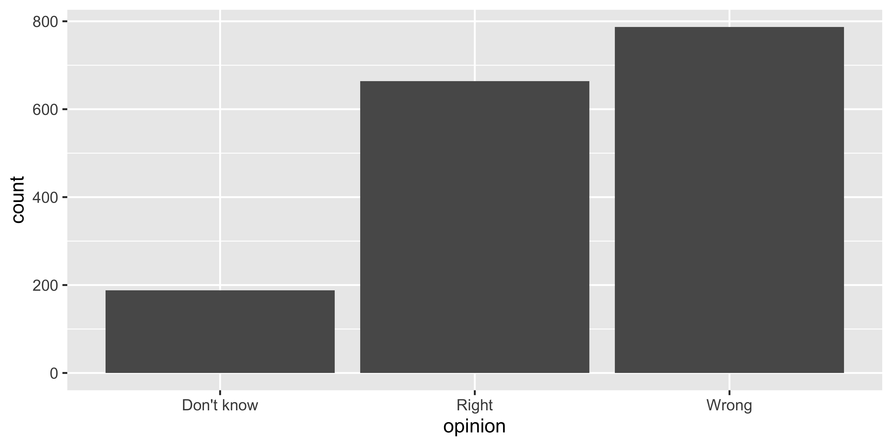
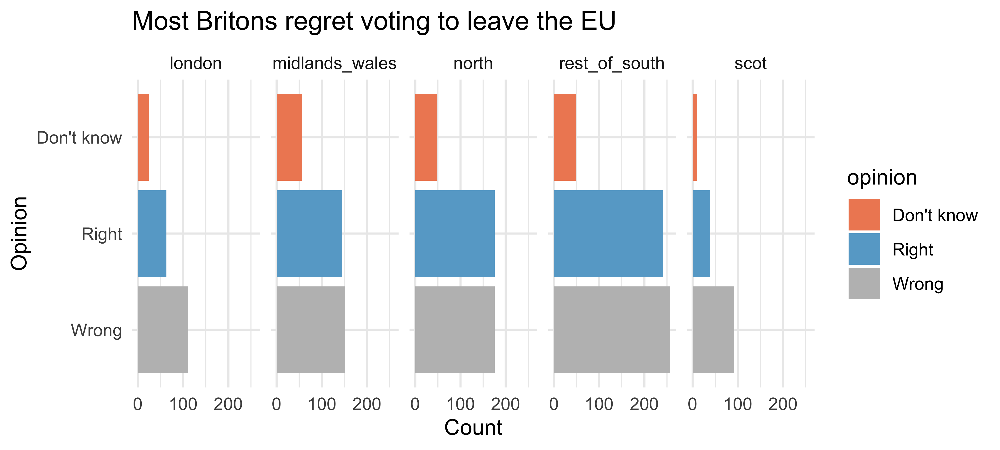
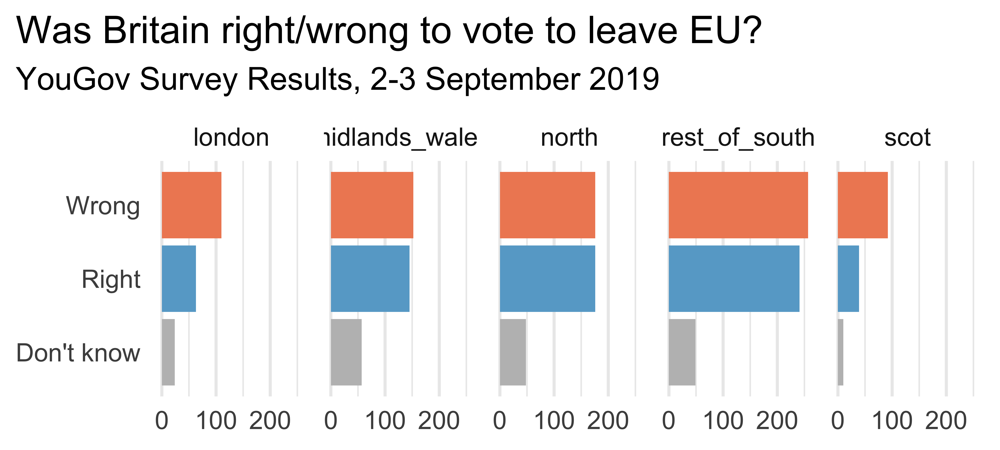
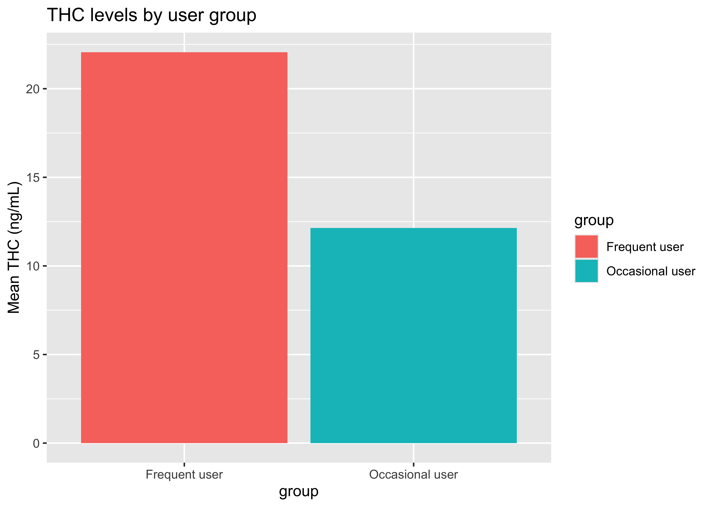
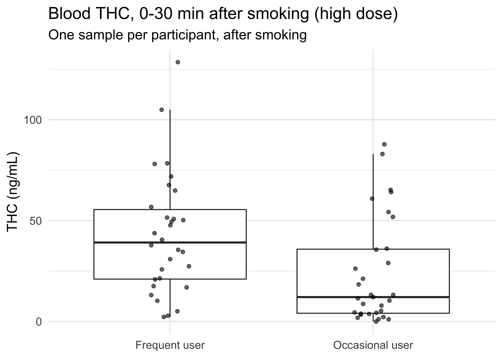

ggplot(brexit, aes(x = opinion)) +
geom_bar()
A:
Due Dates:
theme() argument? which forcats function?). . .
Reminder (course policy): think first, try first; always read & understand the output; cite your sources (including AI).
ggplot(brexit, aes(x = opinion)) +
geom_bar()
Same YouGov data as Monday’s notes.
We decided an effective version of this plot should:
What would you ask an AI tool to get this plot? Write it down first. Then compare with a neighbor.
. . .
A vague prompt:
make this brexit plot better. . .
A precise prompt:
I have a tibble `brexit` with two character columns: `opinion`
("Right", "Wrong", "Don't know") and `region` (e.g. "rest_of_south").
Using ggplot2, make a bar chart with opinion on the y-axis, one facet
per region in a single row, facet labels cleaned up, fill mapped to
opinion with colors Wrong = "#ef8a62", Right = "#67a9cf",
Don't know = "gray", no legend, and a title + subtitle citing YouGov
(2-3 Sept 2019). Explain what each line does.
ggplot(brexit, aes(y = fct_infreq(opinion), fill = opinion)) +
geom_bar() +
facet_wrap(~ region, nrow = 1) +
scale_fill_manual(values = c("#ef8a62", "#67a9cf", "gray")) +
labs(title = "Most Britons regret voting to leave the EU",
x = "Count", y = "Opinion") +
theme_minimal(). . .
🧠 It runs. Is it right? Check it against each of Monday’s decisions.
values are matched to the levels of opinion alphabetically: “Don’t know” got orange, “Right” got blue, “Wrong” got gray.rest_of_south, midlands_wales…. . .
brexit |>
count(opinion) |>
mutate(prop = n / sum(n))# A tibble: 3 × 3
opinion n prop
<chr> <int> <dbl>
1 Don't know 188 0.115
2 Right 664 0.405
3 Wrong 787 0.480. . .
48% is not “most.” The AI wrote a headline the data don’t support.
ggplot(brexit, aes(y = opinion, fill = opinion)) +
geom_bar() +
facet_wrap(~region, nrow = 1, labeller = label_wrap_gen(width = 12)) +
guides(fill = "none") +
labs(title = "Was Britain right/wrong to vote to leave EU?",
subtitle = "YouGov Survey Results, 2-3 September 2019",
x = NULL, y = NULL) +
scale_fill_manual(values = c("Wrong" = "#ef8a62",
"Right" = "#67a9cf",
"Don't know" = "gray")) +
theme_minimal(base_size = 16) +
theme(plot.title.position = "plot",
panel.grid.major.y = element_blank())
Facet labels still need cleaning. How would you do it? (Hint: mutate() + case_when() or fct_recode() before plotting.)
count() / summarize().Among participants who smoked the high-dose joint, do frequent users have higher blood THC than occasional users in the first 30 minutes after smoking?
We’ll use the (cleaned) whole blood data from CS01 (clean_cs01(), same as the ggplot2 notes).

WB |>
filter(treatment == "13.4% THC (high dose)", time_from_start <= 30) |>
group_by(group) |>
summarize(mean_thc = mean(thc, na.rm = TRUE)) |>
ggplot(aes(x = group, y = mean_thc, fill = group)) +
geom_col() +
labs(title = "THC levels by user group",
y = "Mean THC (ng/mL)"). . .
🧠 Think on your own, then chat: what would you check before believing this?
Put a green sticky on the front of your computer when you’re done discussing. Put a pink if you have a question.
time_from_start <= 30 also includes every sample taken before smoking (negative times):
WB |>
filter(treatment == "13.4% THC (high dose)", time_from_start <= 30) |>
count(timepoint)# A tibble: 2 × 2
timepoint n
<fct> <int>
1 pre-smoking 62
2 0-30 min 61. . .
Half of the rows the AI averaged are pre-smoking baselines. That roughly halves both group means.
How many rows does each participant contribute to AI’s summary?
WB |>
filter(treatment == "13.4% THC (high dose)", time_from_start <= 30) |>
count(id, name = "n_rows") |>
count(n_rows, name = "n_participants")# A tibble: 2 × 2
n_rows n_participants
<int> <int>
1 1 1
2 2 61. . .
Almost everyone appears twice (once before and once after smoking), so each “mean” blends two different states of the same person. Our question is about people after smoking.
. . .
After fixing the filter, re-run this check: it should be one row per participant.
na.rm = TRUE could silently drop values. Here it dropped none, but you only know that because you checked (sum(is.na(thc)))WB |>
filter(treatment == "13.4% THC (high dose)",
time_from_start > 0, time_from_start <= 30) |>
group_by(id, group) |>
summarize(thc = mean(thc, na.rm = TRUE), .groups = "drop") |>
ggplot(aes(x = group, y = thc)) +
geom_boxplot(outlier.shape = NA) +
geom_jitter(width = 0.1, alpha = 0.6) +
labs(title = "Blood THC, 0-30 min after smoking (high dose)",
subtitle = "One sample per participant, after smoking",
x = NULL, y = "THC (ng/mL)") +
theme_minimal(base_size = 14)
. . .
Every fix here was a decision about the question. AI couldn’t make it for us, because we never told it.
The words you’ve learned are exactly the words that get better results:
| Instead of… | Try… |
|---|---|
| “make it look better” | “map opinion to fill, remove the legend, use theme_minimal()” |
| “split it up by region” | “facet by region in one row” |
| “only the early ones” | “filter to time_from_start > 0 & time_from_start <= 30” |
| “average it” | “one mean per id, then compare groups” |
glimpse() output (column names + types)Put a green sticky on the front of your computer when you’re done. Put a pink if you want help/have a question.
dplyr vocabulary?